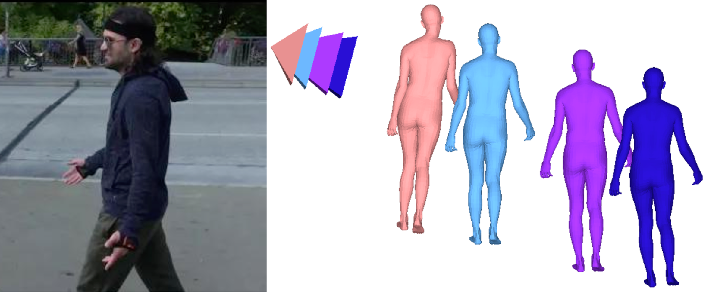
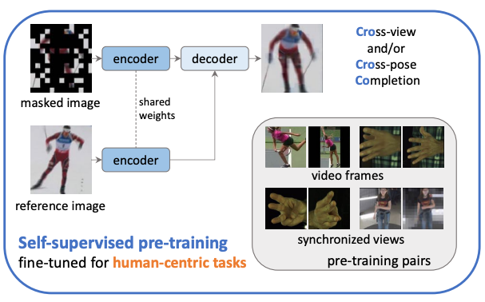
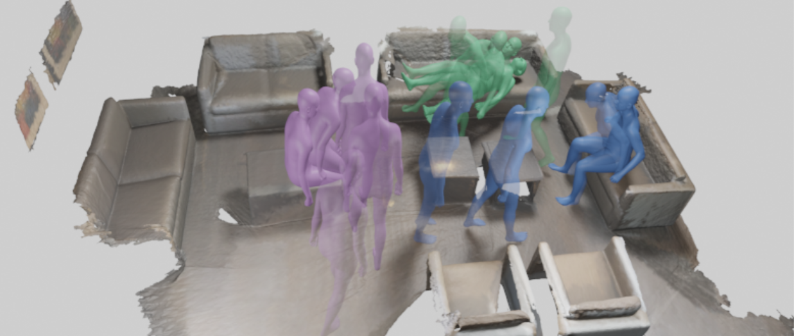
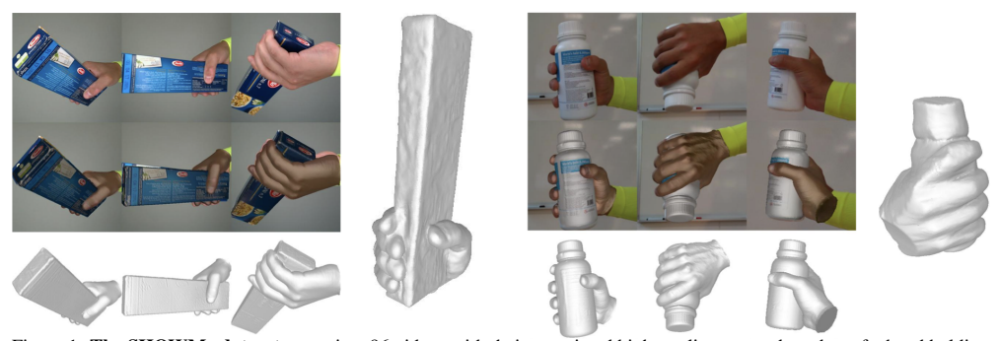
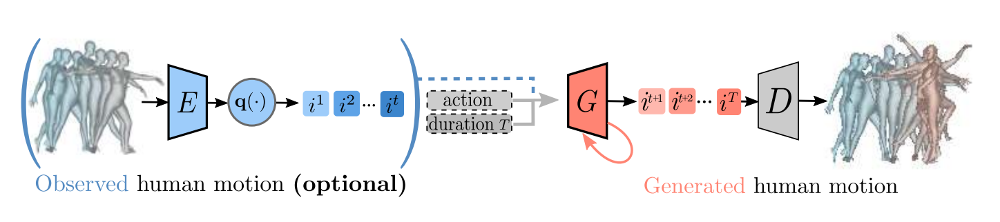
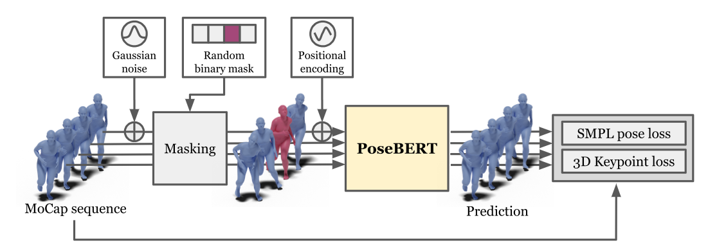
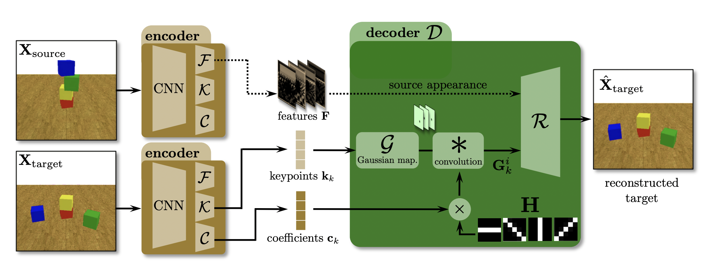
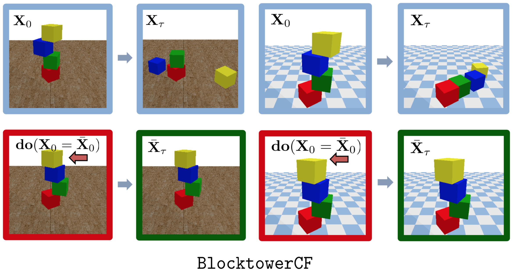
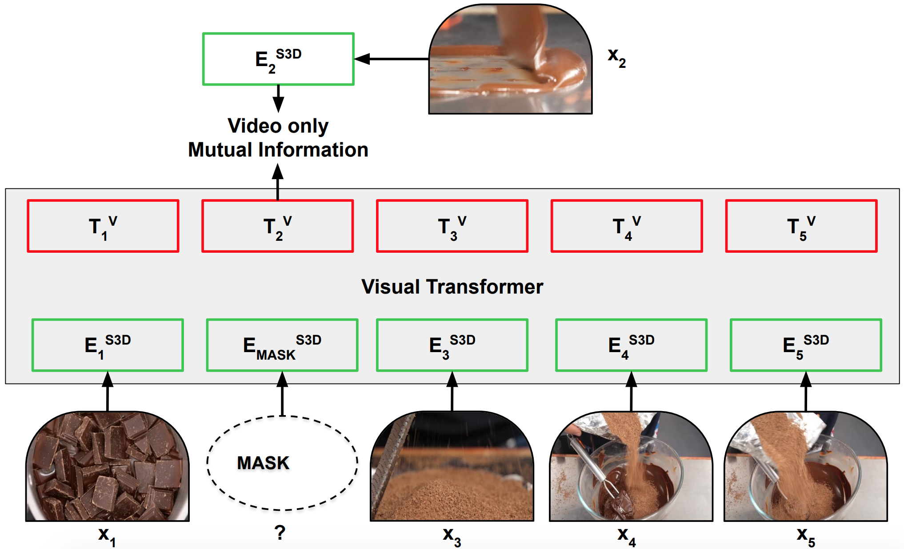
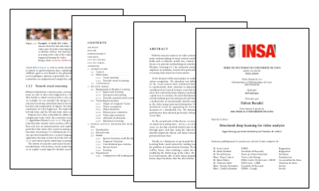

|
Fabien Baradel I am a research scientist at NAVER LABS Europe in Grenoble, France, leading a project on human-centric 3D vision.
|

|
ResearchMy research focuses on computer vision and deep learning, with an emphasis on human-centric 3D vision. I work on advancing methods to understand humans from visual data. |
|  |
CondiMen: Conditional Multi-Person Mesh Recovery
A Bayesian method for multi-person human mesh recovery, modeling ambiguities in 3D pose and shape while enabling uncertainty handling and multi-view integration. |
 |
Multi-HMR: Multi-Person Whole-Body Human Mesh Recovery in a Single Shot
A simple single-shot model for multi-person 3D human mesh recovery from a single RGB image, leveraging a vision transformer. |
|  |
Cross-view and Cross-pose Completion for 3D Human Understanding
A self-supervised pre-training strategy for human-centric 3D vision. |
|  |
Purposer: Putting Human Motion Generation in Context
A method able to generate realistic-looking motions that interact with virtual scenes. |
|  |
SHOWMe: Benchmarking Object-agnostic Hand-Object 3D Reconstruction
A new high-quality textured meshes dataset of hand holding an object. |
|  |
PoseGPT: Quantization-based 3D Human Motion Generation and Forecasting
PoseGPT generates a human motion, conditioned on an action label, a duration and optionally on an observed pas human motion. We learn to quantize the human motion into a discrete latent space and we train a GPT-like model to sequentially predicts next discrete latent indices. |
|  |
PoseBERT: A Generic Transformer Module for Temporal 3D Human Modeling
We propose a generic transformer model for temporal modeling of human and hand shape. We apply this model to different tasks such as pose estimation and future pose prediction. PoseBERT is able to denoise and interpolate which is very important for deploying pose estimation on he wild. |
|  |
Filtered-CoPhy: Unsupervised Learning of Counterfactual Physics in Pixel Space
We propose a model learned in a unsupervised manner which is able to perform counterfactual predictions in pixel space. |
|
Leveraging MoCap Data for Human Mesh Recovery
We show that Mocap data can be used for improving image-based and video-based human mesh recovery methods. We propose a video-based transformer model called PoseBERT which is trained on synthetic data only. |
|
|  |
CoPhy: Counterfactual Learning of Physical Dynamics
We introduce a new problem of counterfactual learning of object mechanics from visual input and a benchmark called CoPhy. |
|  |
Learning Video Representations using Contrastive Bidirectional Transformer
Self-supervised video representation by leveraging ASR and long videos via noise contrastive estimation. |
 |
Object Level Visual Reasoning in Videos
A model capable of learning to reason about semantically meaningful spatio-temporal interactions in videos. |
 |
Human Activity Recognition with Pose-driven Attention to RGB
Human activity recogntion using skeleton data and RGB. We propose a network able to focus on relevant parts of the RGB stream given deep features extracted from the pose stream. |
 |
Glimpse Clouds: Human Activity Recognition from Unstructured Feature Points
We propose a new method for human action recognition relying on RGB data only. A visual attention module is able to extract glimpses within each frame. Resulting local descriptors are soft-assigned to distributed workers which are finally classifying the video. |
 |
Human Action Recognition: Pose-based Attention draws focus to Hands
A new spatio-temporal attention based mechanism for human action recognition able to automatically attend to most important human hands and detect the most discriminative moments in an action. |
 |
Discrepancy-based networks for unsupervised domain adaptation: a comparative
study
We introduce a new dataset for Domain Adaptation and show a comparaison between shallow and deep methods based on Maximum Mean Discrepancy. |
 |
Pose-conditioned Spatio-Temporal Attention for Human Action Recognition
We introduce an attention-based mechanism around hands on RGB videos conditioned on features extracted from human 3D pose. |
|
|  |
Structured Deep Learning for Video Analysis
|
|
|